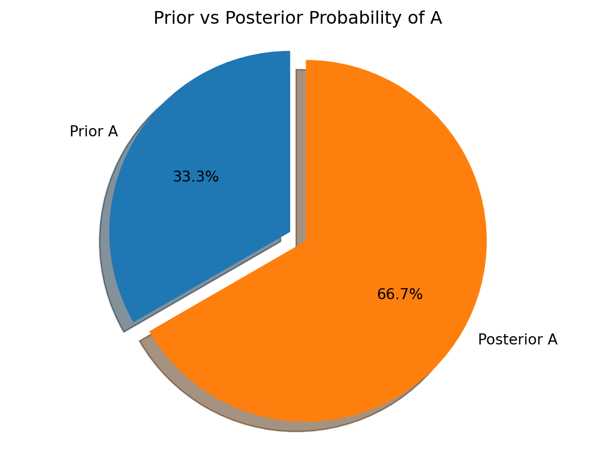
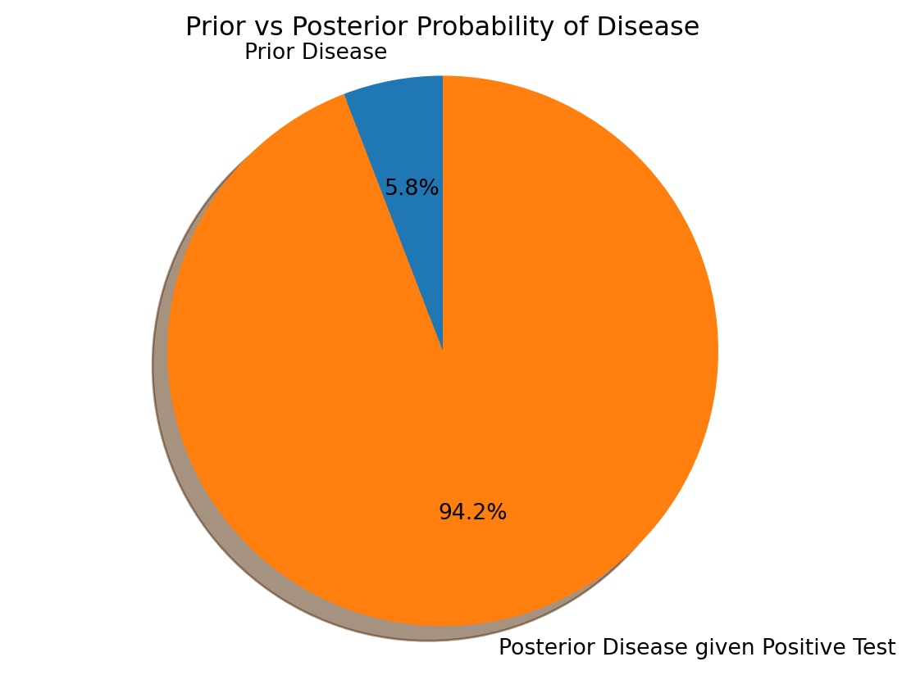
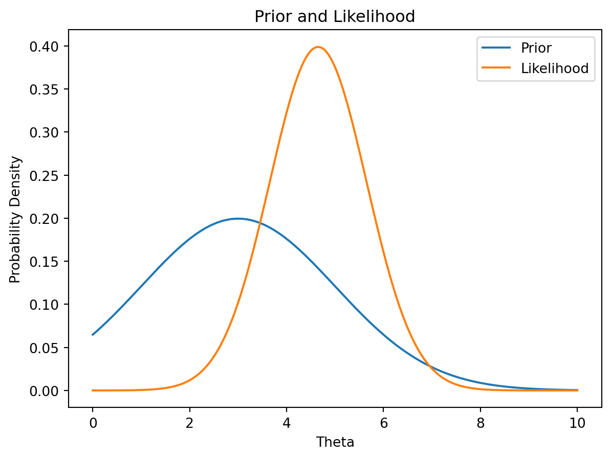
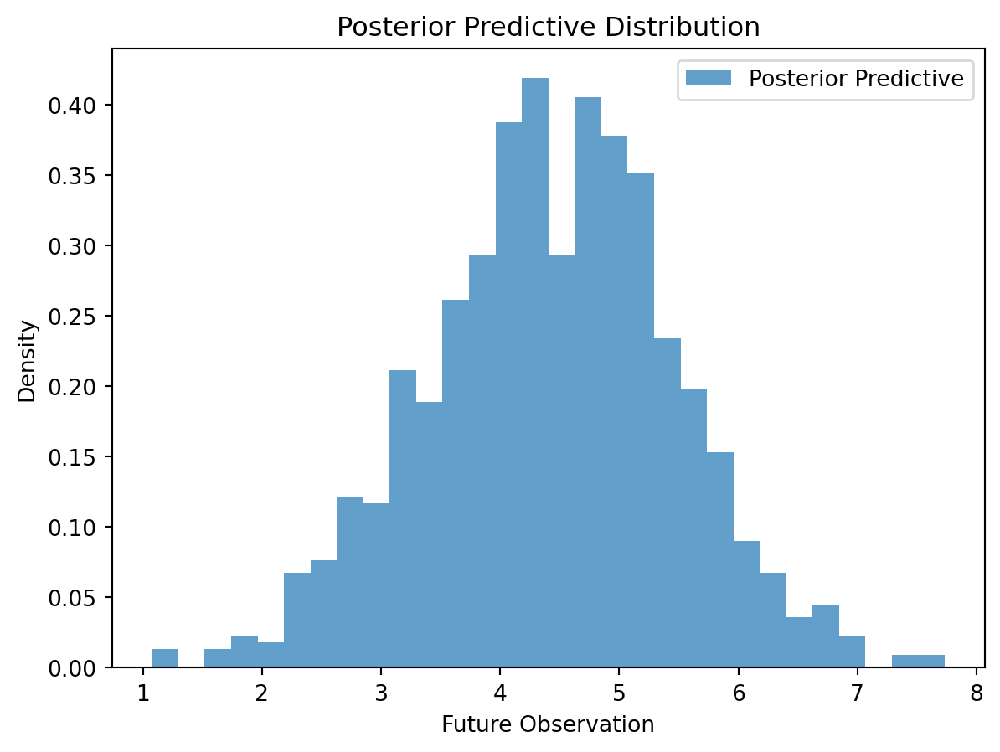

Thomas Bayes (c. 1701 – 1761) was an English statistician, philosopher, and Presbyterian minister. His life, while documented to a degree, remains relatively obscure compared to many other influential figures in mathematics. He was born in London and educated privately, displaying a clear aptitude for mathematics. While his most famous work, “An Essay towards solving a Problem in the Doctrine of Chances,” wasn’t published until after his death (1763, by Richard Price), his contributions to probability theory proved to be foundational for later developments in statistics. Bayes’ essay tackled the problem of inverse probability—essentially, how to update our beliefs about an event based on new evidence. His theorem, which arose from his attempt to solve this problem, provides a rigorous framework for such updates. His work predates many of the mathematical tools we use today, making his achievement all the more remarkable. He also made contributions to other areas of mathematics, although these remain lesser-known.
3.0.2 Early Applications of Bayes’ Theorem
Despite being published posthumously, Bayes’ theorem didn’t immediately gain widespread recognition. Its initial applications were limited and largely confined to specific problems within probability theory itself. However, it gradually found use in a variety of contexts throughout the 19th and early 20th centuries. Some key early applications include:
Astronomy: Early astronomers used Bayesian methods (though perhaps not explicitly labeled as such) to refine estimates of celestial positions and distances based on observational data. The inherent uncertainty in measurements lent itself naturally to the Bayesian framework.
Medical Diagnosis: Even in the absence of powerful computational tools, rudimentary Bayesian reasoning was employed to assess the probability of a disease given certain symptoms. This involved subjective estimations of prior probabilities and likelihoods, which became more refined as more data became available.
3.0.3 The Development of Bayesian Statistics
The development of Bayesian statistics wasn’t a linear progression. For a considerable period, the frequentist approach to statistics dominated, largely due to the computational difficulties associated with applying Bayes’ theorem. Calculating posterior probabilities often involved complex integrals, which were computationally intractable for many problems. However, many key developments propelled Bayesian statistics forward:
Laplace’s Contributions: Pierre-Simon Laplace independently derived Bayes’ theorem and applied it extensively to various problems, including celestial mechanics. His work significantly broadened the theorem’s reach and helped solidify its place in probability theory.
The Advent of Computers: The advent of digital computers revolutionized Bayesian statistics. Previously intractable calculations became feasible, allowing for the application of Bayesian methods to increasingly complex problems. Computational techniques such as Markov Chain Monte Carlo (MCMC) methods became instrumental in sampling from posterior distributions.
Subjective Probability and Prior Elicitation: The incorporation of subjective prior probabilities became a central aspect of Bayesian statistics. Methods for eliciting and representing these priors, and dealing with situations where there is limited data available, were developed and refined. This allowed Bayesian methods to be applied in scenarios where classical frequentist methods struggled.
Let’s illustrate a simple Bayesian update using Python:
import numpy as npimport matplotlib.pyplot as plt# Prior probability of event Aprior_prob_A =0.2# Likelihood of observing evidence B given A is truelikelihood_B_given_A =0.8# Likelihood of observing evidence B given A is falselikelihood_B_given_not_A =0.3#Calculate the probability of Bprob_B = (prior_prob_A * likelihood_B_given_A) + ((1-prior_prob_A) * likelihood_B_given_not_A)# Posterior probability of A given B using Bayes' theoremposterior_prob_A_given_B = (prior_prob_A * likelihood_B_given_A) / prob_Bprint(f"Prior probability of A: {prior_prob_A}")print(f"Likelihood of B given A: {likelihood_B_given_A}")print(f"Likelihood of B given not A: {likelihood_B_given_not_A}")print(f"Posterior probability of A given B: {posterior_prob_A_given_B}")#Visualizing the updatelabels ='Prior A', 'Posterior A'sizes = [prior_prob_A, posterior_prob_A_given_B]explode = (0, 0.1)fig1, ax1 = plt.subplots()ax1.pie(sizes, explode=explode, labels=labels, autopct='%1.1f%%', shadow=True, startangle=90)ax1.axis('equal')plt.title('Prior vs Posterior Probability of A')plt.show()
Prior probability of A: 0.2
Likelihood of B given A: 0.8
Likelihood of B given not A: 0.3
Posterior probability of A given B: 0.4000000000000001

This code demonstrates a basic Bayesian update. The mathematical formulation is:
\(P(A|B) = \frac{P(B|A)P(A)}{P(B)}\)
where:
\(P(A|B)\) is the posterior probability of A given B.
\(P(B|A)\) is the likelihood of B given A.
\(P(A)\) is the prior probability of A.
\(P(B)\) is the marginal likelihood of B (calculated using the law of total probability).
The chart visually represents the shift from prior to posterior probability. Modern Bayesian statistics relies heavily on complex computational methods and continues to evolve, finding applications in fields ranging from machine learning and medical diagnosis to finance and climate modeling.
3.1 The Theorem and its Components
3.1.1 Introducing Bayes’ Theorem
Bayes’ theorem is a fundamental concept in probability theory that describes how to update the probability of a hypothesis based on new evidence. It provides a mathematical framework for revising our beliefs in light of new information. Instead of simply accepting new data at face value, Bayes’ theorem allows us to combine this data with our pre-existing beliefs (prior knowledge) to arrive at a more refined understanding (posterior knowledge). This iterative process of updating beliefs is essential in many real-world applications. The core idea is that our confidence in a hypothesis should change as we gather more relevant data.
3.1.2 Understanding Conditional Probability
Before diving into Bayes’ theorem itself, it’s essential to grasp the concept of conditional probability. Conditional probability refers to the probability of an event occurring given that another event has already occurred. We denote the conditional probability of event A occurring given that event B has occurred as \(P(A|B)\). This is read as “the probability of A given B”.
For example, consider the probability of rain (\(A\)) given that it’s cloudy (\(B\)). This is different from the overall probability of rain, as knowing it’s cloudy increases the likelihood of rain. Conditional probability is formally defined as:
\(P(A|B) = \frac{P(A \cap B)}{P(B)}\)
where:
\(P(A|B)\) is the conditional probability of A given B.
\(P(A \cap B)\) is the probability of both A and B occurring (joint probability).
\(P(B)\) is the probability of B occurring.
Note that \(P(B)\) must be greater than 0; we cannot condition on an event that has a zero probability of occurring.
3.1.3 The Formula: A Detailed Breakdown
Bayes’ theorem provides a way to calculate the conditional probability \(P(A|B)\) when we know the conditional probability \(P(B|A)\), along with the prior probabilities \(P(A)\) and \(P(B)\). The theorem states:
\(P(A|B) = \frac{P(B|A)P(A)}{P(B)}\)
Let’s break down each component:
\(P(A|B)\) (Posterior Probability): This is the probability of event A occurring given that event B has occurred. This is what we want to calculate using Bayes’ theorem. It represents our updated belief about A after considering the evidence B.
\(P(B|A)\) (Likelihood): This is the probability of event B occurring given that event A has occurred. This represents how likely the evidence B is if the hypothesis A is true.
\(P(A)\) (Prior Probability): This is the initial probability of event A occurring before considering any new evidence. This reflects our pre-existing beliefs or knowledge about A.
\(P(B)\) (Evidence Probability or Marginal Likelihood): This is the probability of event B occurring, regardless of whether A is true or false. It can be calculated using the law of total probability:
\(P(B) = P(B|A)P(A) + P(B|\neg A)P(\neg A)\)
where \(\neg A\) denotes the complement of A (A not occurring).
3.1.4 Visualizing Bayes’ Theorem
A simple example helps illustrate Bayes’ theorem visually. Let’s say we’re testing for a rare disease.
import matplotlib.pyplot as plt# Prior probabilitiesprior_disease =0.01# 1% prevalence of the diseaseprior_no_disease =0.99# Likelihoods (test accuracy)likelihood_positive_given_disease =0.95# Test is 95% accurate when disease is presentlikelihood_positive_given_no_disease =0.05# Test has a 5% false positive rate# Calculate the probability of a positive test resultprob_positive = (likelihood_positive_given_disease * prior_disease) + (likelihood_positive_given_no_disease * prior_no_disease)# Bayes' Theorem to calculate the posterior probability of having the disease given a positive testposterior_disease_given_positive = (likelihood_positive_given_disease * prior_disease) / prob_positiveprint(f"Probability of having the disease given a positive test: {posterior_disease_given_positive:.4f}")# Visualizelabels ='Prior Disease', 'Posterior Disease given Positive Test'sizes = [prior_disease, posterior_disease_given_positive]fig1, ax1 = plt.subplots()ax1.pie(sizes, labels=labels, autopct='%1.1f%%', shadow=True, startangle=90)ax1.axis('equal')plt.title('Prior vs Posterior Probability of Disease')plt.show()
Probability of having the disease given a positive test: 0.1610

This Python code calculates and visualizes the Bayesian update for the disease example. The pie chart clearly shows the shift in probability from the prior to the posterior. Even with a seemingly accurate test, the rarity of the disease means the posterior probability of having the disease, given a positive test, is still relatively low.
graph LR
A[Prior Probability P(A)] --> B{Evidence B};
C[Likelihood P(B|A)] --> B;
B --> D[Posterior Probability P(A|B)];
E[Prior Probability P(¬A)] --> B;
F[Likelihood P(B|¬A)] --> B;
This Mermaid diagram shows the flow of information in Bayes’ theorem, highlighting the relationship between the prior, likelihood, and posterior probabilities. This visual representation aids in understanding how the evidence updates our prior belief.
3.2 Prior Probability
3.2.1 Defining Prior Probability
In Bayesian statistics, the prior probability, denoted as \(P(A)\), represents the initial belief or knowledge about the probability of an event A occurring before observing any new data or evidence. It’s a subjective assessment reflecting our understanding of the event based on existing information, previous experience, or expert opinion. The choice of prior is a essential step in Bayesian analysis, as it significantly influences the resulting posterior probability. A well-chosen prior incorporates relevant information effectively, while a poorly chosen one can lead to inaccurate or misleading conclusions.
3.2.2 Types of Priors (Informative, Non-Informative)
Priors can be broadly categorized into two types:
Informative Priors: These priors reflect substantial prior knowledge about the event. They are often based on previous studies, expert judgment, or theoretical considerations. An informative prior “informs” the analysis by incorporating existing knowledge into the Bayesian update. For example, if we’re estimating the success rate of a new drug, an informative prior might be based on the success rates of similar drugs in clinical trials.
Non-informative (or Weakly Informative) Priors: These priors represent minimal or vague prior knowledge. They aim to let the data speak for itself, minimizing the influence of prior beliefs. A non-informative prior is often used when there is limited or no prior information available. However, it is important to note that truly “non-informative” priors are difficult to define and often have some implicit assumptions. Examples include uniform priors (assigning equal probability to all possible values) or Jeffreys priors (which are invariant under reparameterization).
3.2.3 Choosing an Appropriate Prior
Choosing an appropriate prior is a essential step and often involves a degree of subjectivity. Several factors influence the choice:
Available Prior Knowledge: The most significant factor is the amount and quality of prior knowledge. If substantial relevant information exists, an informative prior is appropriate. With little prior knowledge, a non-informative prior is often preferred.
Computational Considerations: Some priors might lead to computationally challenging calculations. The choice of prior should be balanced against the computational resources available.
Sensitivity Analysis: It’s good practice to perform sensitivity analysis to check how sensitive the posterior probability is to different choices of priors. If the posterior is relatively insensitive to changes in the prior, it suggests that the data strongly outweighs the prior belief.
3.2.4 Impact of Prior on Posterior
The prior significantly impacts the posterior probability. Let’s illustrate this with a Python example:
import numpy as npimport matplotlib.pyplot as pltdef bayes_update(prior, likelihood, evidence):"""Performs a Bayesian update.""" posterior = (likelihood * prior) / evidencereturn posterior# Likelihood of observing data given hypothesislikelihood =0.7# Different priorsprior1 =0.2#Weak priorprior2 =0.8#Strong prior#Evidence Probability (Marginal Likelihood) - Needs to be calculated based on the priors and likelihoods. Simplified here for illustration purposes.evidence =0.5#Bayesian Updatesposterior1 = bayes_update(prior1, likelihood, evidence)posterior2 = bayes_update(prior2, likelihood, evidence)print(f"Prior 1: {prior1:.2f}, Posterior 1: {posterior1:.2f}")print(f"Prior 2: {prior2:.2f}, Posterior 2: {posterior2:.2f}")#Visualizationlabels = ['Prior 1', 'Posterior 1', 'Prior 2', 'Posterior 2']sizes = [prior1, posterior1, prior2, posterior2]fig, ax = plt.subplots()ax.pie(sizes, labels=labels, autopct='%1.1f%%', startangle=140)ax.axis('equal')plt.title('Impact of Prior on Posterior')plt.show()
This Python code demonstrates how different priors, even when combined with the same likelihood and evidence, result in different posterior probabilities. The chart visualizes this difference, showing that the prior strongly influences the final conclusion. The mathematical relationship is again:
\(P(A|B) = \frac{P(B|A)P(A)}{P(B)}\)
A strong prior can significantly pull the posterior towards its value, especially when the data provides weak or ambiguous evidence. This highlights the importance of carefully considering and justifying the choice of prior.
3.3 Likelihood
3.3.1 Defining Likelihood
In Bayesian statistics, the likelihood function quantifies the probability of observing the available data given a specific hypothesis or parameter value. Unlike a probability, the likelihood is not a probability distribution over the parameters. Instead, it’s a function of the parameters, showing how likely the observed data is for different parameter values. It essentially measures how well a given parameter value explains the observed data. The higher the likelihood, the better the parameter value fits the data.
3.3.2 Likelihood Function
The likelihood function is usually denoted as \(L(\theta|x)\), where:
\(\theta\) represents the parameter(s) of interest (e.g., the mean of a normal distribution, the probability of success in a binomial distribution). This is what we want to estimate.
\(x\) represents the observed data.
The likelihood function is directly related to the probability density function (PDF) or probability mass function (PMF) of the data, but its interpretation is different. For example, if the data \(x\) follows a normal distribution with mean \(\theta\) and known variance \(\sigma^2\), the likelihood function is given by:
Note that this is the same formula as the PDF of a normal distribution, but here we treat it as a function of \(\theta\) (the parameter we are trying to estimate), with the data x being fixed.
3.3.3 Interpreting Likelihood Values
Likelihood values themselves are not probabilities. They don’t need to sum or integrate to 1. We’re interested in relative likelihoods:
A higher likelihood value indicates that the given parameter value is more consistent with the observed data.
A lower likelihood value indicates that the given parameter value is less consistent with the observed data.
We often work with the log-likelihood, \(\log L(\theta|x)\), which simplifies calculations and makes it easier to compare likelihoods.
3.3.4 Relationship between Likelihood and Prior
The likelihood and prior probability are the two key ingredients in Bayes’ theorem. They combine to produce the posterior probability:
\(P(\theta|x) \propto L(\theta|x)P(\theta)\)
where:
\(P(\theta|x)\) is the posterior probability distribution of the parameter \(\theta\) given the data \(x\).
\(L(\theta|x)\) is the likelihood function.
\(P(\theta)\) is the prior probability distribution of the parameter \(\theta\).
The symbol \(\propto\) indicates proportionality—the posterior is proportional to the product of the likelihood and prior. The constant of proportionality is determined by ensuring the posterior integrates to 1 (for continuous parameters) or sums to 1 (for discrete parameters).
Let’s visualize the relationship between likelihood and prior:
import numpy as npimport matplotlib.pyplot as pltfrom scipy.stats import norm# Sample datadata = np.random.normal(loc=5, scale=1, size=10)#Prior distributionprior_mean =3prior_std =2prior = norm(loc=prior_mean, scale=prior_std)# Likelihood function (assuming known variance)likelihood_mean = np.mean(data)likelihood_std =1#Assume known standard deviationlikelihood = norm(loc=likelihood_mean, scale=likelihood_std)#Range for plottingtheta_range = np.linspace(0, 10, 200)#Calculate Likelihood and Priorprior_probs = prior.pdf(theta_range)likelihood_probs = likelihood.pdf(theta_range)#Plotplt.plot(theta_range, prior_probs, label='Prior')plt.plot(theta_range, likelihood_probs, label='Likelihood')plt.xlabel('Theta')plt.ylabel('Probability Density')plt.legend()plt.title('Prior and Likelihood')plt.show()

This code generates a plot showing a hypothetical prior and likelihood. The posterior (not plotted here for simplicity) would be proportional to the product of these two curves. The posterior would represent a compromise between the prior belief and the information provided by the data. Observe that the prior influences the shape and location of the posterior distribution. In essence, the prior represents our prior belief, while the likelihood incorporates the information from the observed data. The posterior distribution is their combination.
3.4 Posterior Probability
3.4.1 Defining Posterior Probability
In Bayesian statistics, the posterior probability, denoted as \(P(\theta|x)\), represents the updated probability distribution of a parameter \(\theta\) after observing data \(x\). It combines prior knowledge about the parameter (prior probability, \(P(\theta)\)) with the information obtained from the data (likelihood, \(L(\theta|x)\)). The posterior distribution is the central result of a Bayesian analysis, summarizing our updated beliefs about the parameter after incorporating the evidence. It’s essential to understand that the posterior is not just a single value, but a probability distribution, reflecting the uncertainty that remains about the parameter even after observing the data.
3.4.2 Interpreting Posterior Distributions
The posterior distribution is interpreted as a probability distribution over the possible values of the parameter \(\theta\). Different aspects of the posterior distribution offer valuable insights:
Mean/Median/Mode: These summary statistics provide point estimates for the parameter. The mean gives the average value of \(\theta\) according to the posterior distribution, the median provides the value that splits the posterior distribution in half, and the mode represents the most likely value of \(\theta\).
Credible Intervals: These intervals provide a range of plausible values for the parameter with a specified probability. For example, a 95% credible interval contains the values of \(\theta\) that have a 95% probability of including the true value, given the observed data.
Shape: The shape of the posterior distribution reveals information about the uncertainty and potential multimodality of the parameter. A narrow, peaked distribution indicates high certainty about the parameter value, while a wide, flat distribution implies significant uncertainty.
3.4.3 Updating Beliefs with Data
The Bayesian approach elegantly reflects the updating of beliefs with new data. The prior distribution captures our initial understanding, while the likelihood function incorporates the information from the observed data. Bayes’ theorem formalizes this update:
where \(P(x)\), the marginal likelihood (evidence), acts as a normalizing constant, ensuring that the posterior integrates (or sums) to 1. This equation shows how the posterior is proportional to the product of the likelihood and the prior. The evidence plays a essential role, determining the scale of the posterior distribution.
3.4.4 Posterior Predictive Distribution
The posterior predictive distribution, \(P(\tilde{x}|x)\), provides a probability distribution for future observations, \(\tilde{x}\), given the observed data, \(x\). It incorporates uncertainty about the model parameters by averaging over the posterior distribution. This is formally expressed as:
This integral averages the predictive distribution of future observations (\(P(\tilde{x}|\theta)\)) across all possible parameter values (\(\theta\)), weighted by their posterior probabilities (\(P(\theta|x)\)). This approach offers a more realistic and detailed prediction that accounts for the uncertainty in the estimated parameters.
Let’s illustrate with a Python example using simulated data:
import numpy as npimport matplotlib.pyplot as pltfrom scipy.stats import norm, beta# Simulate data from a normal distributiontrue_mean =5true_std =1data = np.random.normal(loc=true_mean, scale=true_std, size=10)# Prior distribution (Normal)prior_mean =3prior_std =2prior = norm(loc=prior_mean, scale=prior_std)# Posterior (using conjugate prior for simplicity)posterior_mean = np.mean(data)posterior_std = true_std/np.sqrt(len(data)) #approximation for large sampleposterior = norm(loc=posterior_mean, scale=posterior_std)# Generate samples from posterior predictive distributionnum_samples =1000posterior_samples = posterior.rvs(size=num_samples)predictive_samples = np.random.normal(loc=posterior_samples, scale=true_std, size=num_samples)# Plot the posterior predictive distributionplt.hist(predictive_samples, bins=30, density=True, alpha=0.7, label='Posterior Predictive')plt.xlabel('Future Observation')plt.ylabel('Density')plt.title('Posterior Predictive Distribution')plt.legend()plt.show()

This code simulates data, defines a prior, calculates a simplified posterior (assuming known variance for convenience), and then generates samples from the posterior predictive distribution. The histogram shows the distribution of predicted future observations, reflecting the uncertainty inherent in the Bayesian approach. Note that a more realistic scenario would involve a full Bayesian update without assuming known variance, requiring more complex computational methods.
3.5 Practical Examples and Applications
3.5.1 Simple Example: Medical Diagnosis
Bayes’ theorem is exceptionally useful in medical diagnosis. Consider a test for a rare disease:
Let D represent the event that a patient has the disease.
Let T represent the event that the test is positive.
We are interested in finding \(P(D|T)\), the probability that a patient has the disease given a positive test result. We need the following information:
Prior probability of disease:\(P(D)\) – The prevalence of the disease in the population. This might be a low value for a rare disease.
Sensitivity:\(P(T|D)\) – The probability of a positive test given the disease is present (true positive rate).
Specificity:\(P(\neg T|\neg D)\) – The probability of a negative test given the disease is absent (true negative rate). This is equal to \(1 - P(T|\neg D)\).
Positive Predictive Value: This is what we ultimately want to calculate: \(P(D|T)\).
Bayes’ theorem allows us to calculate the positive predictive value (PPV):
\(P(D|T) = \frac{P(T|D)P(D)}{P(T)}\)
Where \(P(T)\) (the probability of a positive test) is calculated using the law of total probability:
\(P(T) = P(T|D)P(D) + P(T|\neg D)P(\neg D)\)
Let’s assume the following values:
\(P(D) = 0.01\) (1% prevalence)
\(P(T|D) = 0.95\) (95% sensitivity)
\(P(T|\neg D) = 0.05\) (5% false positive rate)
Using this information, we can calculate \(P(D|T)\). This will show that even with a highly sensitive test, the probability of actually having the disease given a positive test might still be surprisingly low due to the low prior probability of the disease. This emphasizes the importance of considering both the test results and the base rate of the condition. We leave the explicit calculation as an exercise for the reader, encouraging them to perform it using Python code similar to the examples in previous sections.
3.5.2 Illustrative Example: Spam Filtering
Spam filtering utilizes Bayesian techniques to classify emails as spam or not spam. The process involves:
Training: A model is trained on a dataset of labeled emails (spam and not spam), learning the association between words and the email class.
Prior Probabilities: The model establishes prior probabilities for spam and not spam emails based on the training data.
Likelihoods: For each word in a new email, the model calculates the likelihood of that word appearing in spam emails and in non-spam emails.
Bayesian Update: Bayes’ theorem combines the prior probabilities and the likelihoods of words in the new email to calculate the posterior probability that the email is spam.
Classification: If the posterior probability of spam exceeds a certain threshold, the email is classified as spam. Otherwise, it’s considered not spam.
The calculation is similar to the medical diagnosis example but extended to multiple features (words). The simplification using the Naive Bayes assumption (assuming independence between words) makes it computationally efficient. The implementation using Python would involve techniques such as creating frequency tables of words in spam and non-spam emails. This is a common application of Bayes’ theorem and forms the basis of many robust spam filters.
3.5.3 Example: Credit Risk Assessment
Credit risk assessment uses Bayesian methods to predict the probability of a borrower defaulting on a loan.
Prior Information: Prior information might include the borrower’s credit history, income level, debt-to-income ratio, and other relevant financial data. These factors can inform the prior probability of default (\(P(\text{Default})\)).
New Data: New data may include the specific characteristics of the loan application, such as loan amount, interest rate, and loan term. This informs the likelihood of default given certain loan characteristics (\(P(\text{Data}|\text{Default})\)).
Bayesian Update: Bayes’ theorem combines prior information with new data to compute the posterior probability of default, providing a more refined risk assessment. This can be implemented using various Bayesian models, such as logistic regression models with appropriate priors.
Decision: The lender uses the posterior probability to decide whether to approve or reject the loan application, balancing the potential profit against the risk of default.
Python implementations often employ Bayesian logistic regression or other Bayesian models to handle the probabilistic nature of the problem. Libraries like PyMC or Stan would be used to perform the Bayesian inference, providing the posterior distribution of the probability of default. Visualization would then typically involve plots of the posterior distribution and credible intervals to quantify the uncertainty of the prediction. This application highlights the power of Bayesian methods in handling complex real-world scenarios where uncertainty is significant.